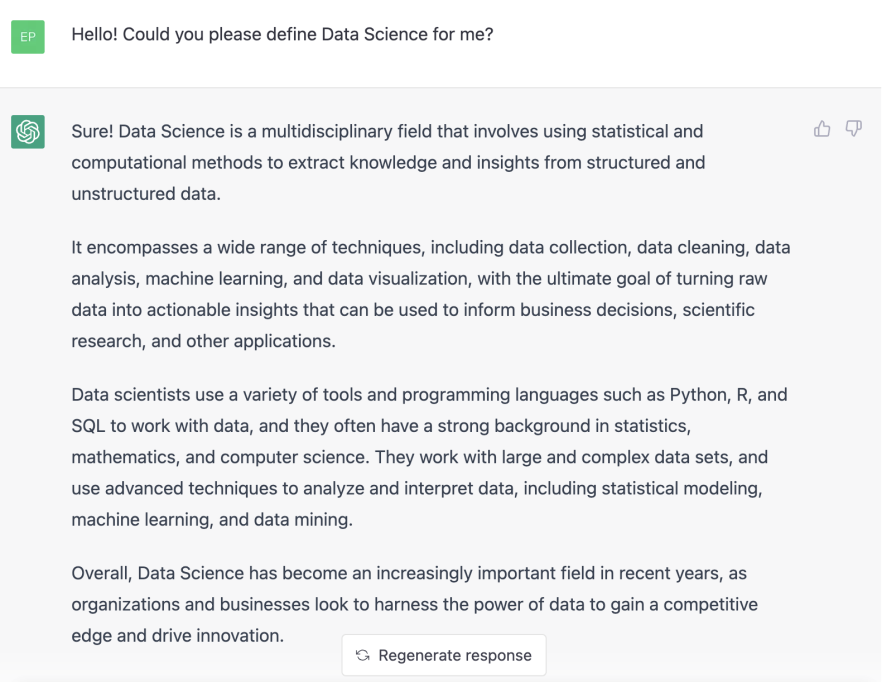
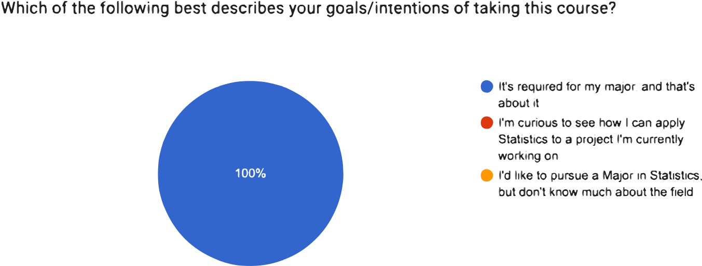

PSTAT 5A: Lecture 00
Introduction to Data Science
Welcome!
Course Staff
- Instructor:
- Ethan (He/Him)
- epmarzban@pstat.ucsb.edu
- T 4:30 - 5:30pm (Zoom) and Th 2 - 3pm (SH607F)
Teaching Assistants:
- Mengrui Zhang
- mengrui@ucsb.edu
- OH: MW, 4-6pm (SH 5431W)
- Olivier Mulkin
- omulkin@ucsb.edu
- OH: T, 1 - 3pm (Zoom; starts next week)
Course Resources
Canvas: for grades
Gradescope: for quizzes and labs
Course Website: https://pstat5a.github.io
- All relevant course material will be posted to the website!
- One exception: quizzes, which will be administered through Gradescope
Please read the syllabus fully and carefully!
- There’s also a small blurb about email policies in the syllabus. Basically, I’m asking that you email me and the TA’s only in case of emergency (and I leave it to you to determine what’s an emergency); instead, I ask that you please use Office Hours (or even the end of lecture) to communicate with us. I do this to help alleviate stress on both ends of email exchanges; thank you for understanding!
Discord
bit.ly/ssa5adisc
Any Questions about the syllabus?
What is Data Science

What is Data Science?
Not a bad definition!
Though, there isn’t a single agreed-upon definition of what data science is.
Most people agree that Data science is cross-disciplinary, drawing experience and expertise from a wide variety of different fields.
- Perhaps the two main fields from which Data Science draws are Statistics and Computer Science
Like ChatGPT suggested, computation is an integral part of Data Science.
- As we will soon see, the data that is being analyzed these days is huge; certainly too large to be able to do anything with it on pen and paper.
- However, Data Science is not just running things through computer programs.
An equally integral part of Data Science is the theory that surrounds data, modeling, and randomness- theory that comes from the field of Statistics.
Even if you are planning on going into industry right after university, you will still need to know some of the theory.
- One of my undergrad professors put it well- companies don’t want to hire people to mindlessly pass data through computer programs. Rather, they want people that are not only well-versed in the programmatic applications of data but also the reasons behind why they are applying the programming tools they are applying!
The Path Forward
So, how does this course factor into the discourse surrounding Data Science?
From the course description:
Introduction to data science. Concepts of statistical thinking. Topics include random variables, sampling distributions, hypothesis testing, correlation and regression. Visualizing, analyzing and interpreting real world data using Python. Computing labs required.
- Indeed, this course will serve as a sort of “table of contents” of Data Science, touching on many (but still not all) of the wonderful subfields and subtopics that comprise the field.
- We will start with Descriptive Statistics, a branch of statistics designed to try and describe or summarize data.
We will then devote some time to talking about Probability, which is in many ways the theory behind randomness and uncertainty.
Next, we will use Inferential Statistics to discuss how we can use data to draw conclusions (i.e. inferences) about the world around us.
- This will include both Confidence Intervals as well as Hypothesis Testing.
Then, we will discuss a topic known as Regression which will be our first (and only, for this class) foray into statistical modeling.
We will then take a closer look at how data is collected, and the various strategies that can be utilized when trying to collect data of our own.
Why Should I Care?
- A natural question that arises in a class like this is: “why should I care?”

Why Should I Care?
- I suspect not all of you are necessarily pursuing a degree in Statistics or Data Science.
However, wherever there is data, there is the need for a Data Scientist (or, at least, some of the principles from Data Science).
- So, even if you are working in (what you might think is) a field that is far removed from Statsitics, the minute you start dealing with Data is the minute you start needing to know Data Science!
Here’s a perhaps more pragmatic answer: even if you think you want to go straight into industry right after this course, no company wants to hire someone to just mindlessly crunch numbers - though computing experience is absolutely crucial in making yourself a good candidate, employers would much rather have someone who is both skilled at running code but also understands why they are running the code they are running!